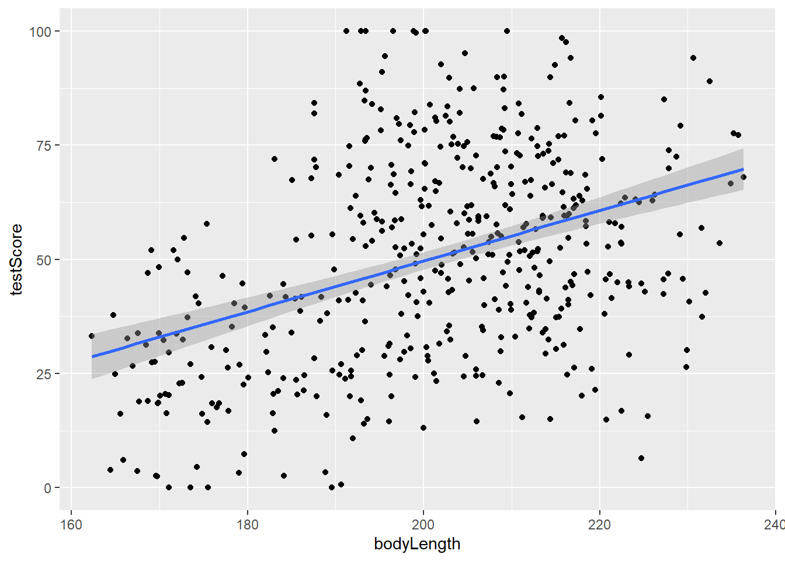
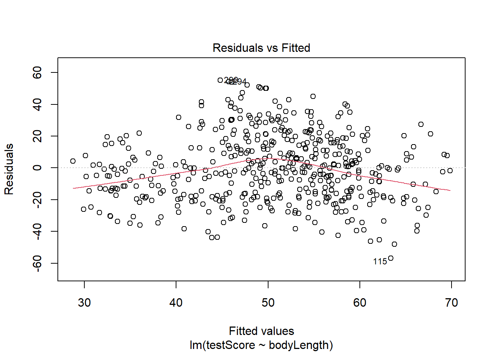
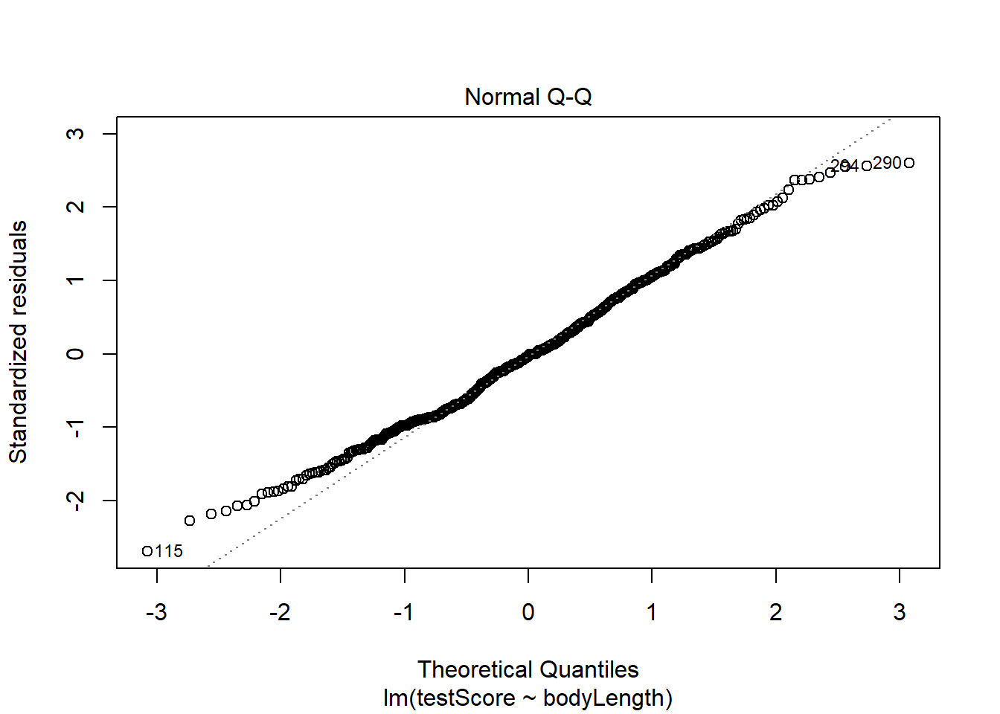
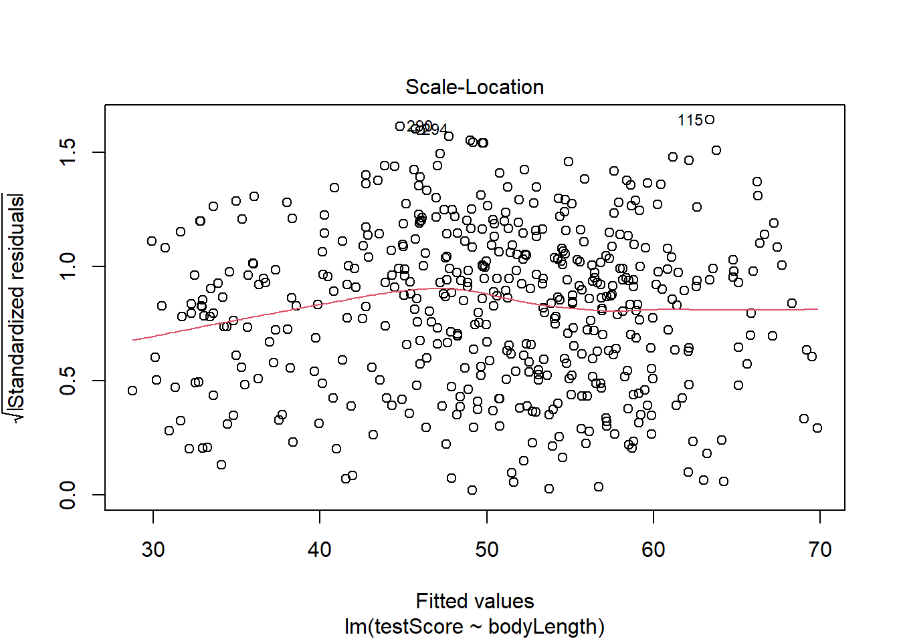
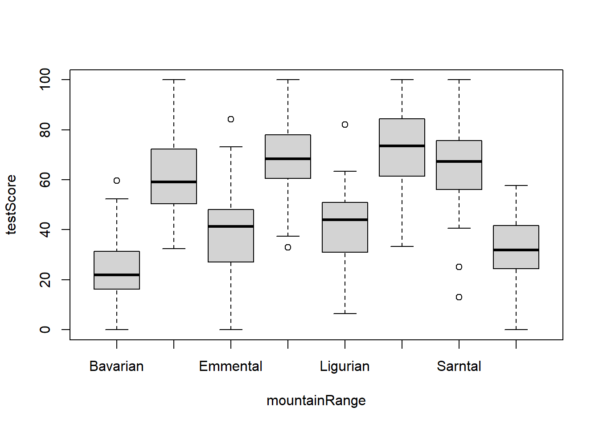
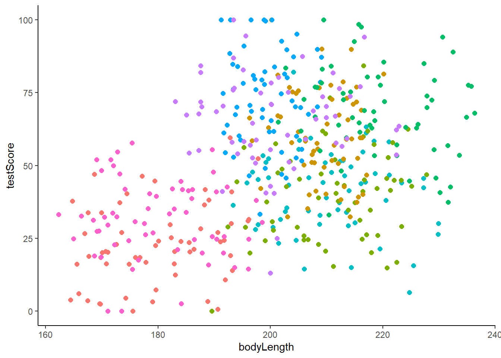
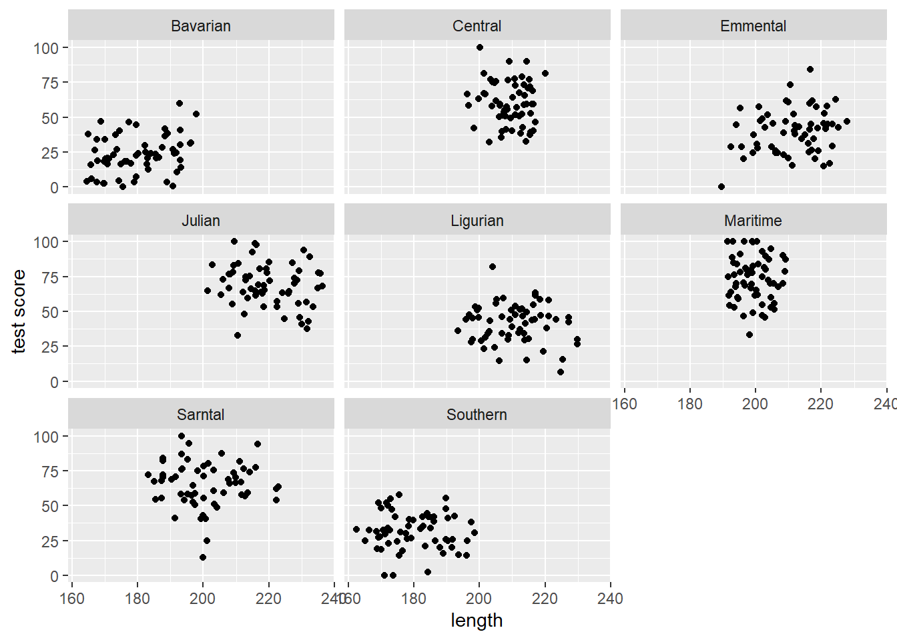
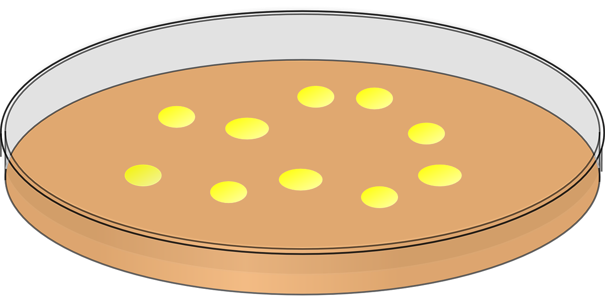
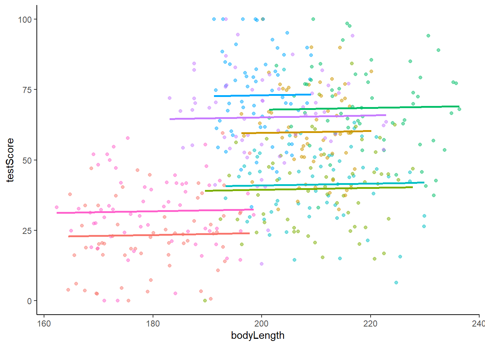
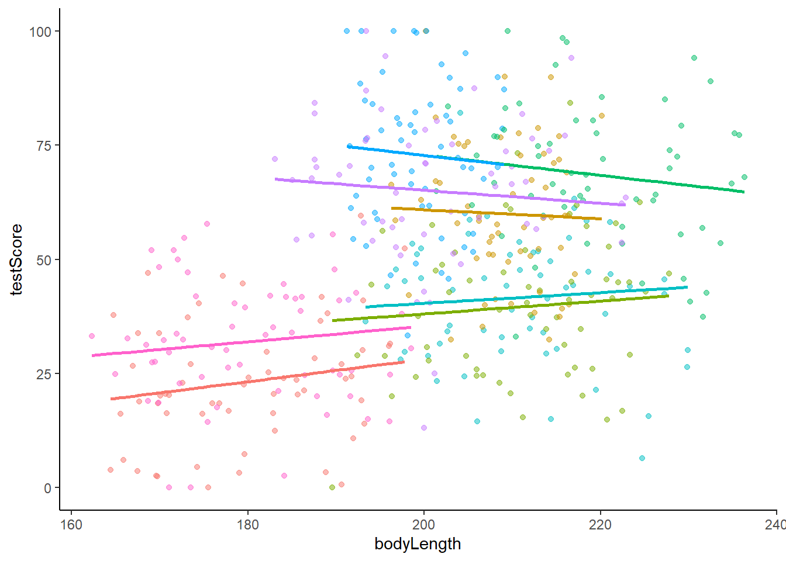

Mixed Models
1 Dragon example
1.1 Linear models reminder
We will use a fictional study system - dragons! If you are using R for yourself, click this link to the dragon data and right click to save it in your data file in your R project.

Imagine we went to eight mountain ranges (mountainRange)
and collected data on the intelligence (testScore) and size
(bodyLength) of 480 dragons. We want to know if size
affects their intelligence since we want intelligent dragons that we can
train but that aren’t too big and scary!
Load the csv dataset
dragons <- read.csv(file = "data/dragons.csv")
head(dragons) testScore bodyLength mountainRange
1 16.147309 165.5485 Bavarian
2 33.886183 167.5593 Bavarian
3 6.038333 165.8830 Bavarian
4 18.838821 167.6855 Bavarian
5 33.862328 169.9597 Bavarian
6 47.043246 168.6887 BavarianOne way to analyse this data would be to fit a linear model.
Fit the model with testScore as the response and
bodyLength as the predictor and have a look at the
output:
basic.lm <- lm(testScore ~ bodyLength, data = dragons)
summary(basic.lm)
Call:
lm(formula = testScore ~ bodyLength, data = dragons)
Residuals:
Min 1Q Median 3Q Max
-56.962 -16.411 -0.783 15.193 55.200
Coefficients:
Estimate Std. Error t value Pr(>|t|)
(Intercept) -61.31783 12.06694 -5.081 5.38e-07 ***
bodyLength 0.55487 0.05975 9.287 < 2e-16 ***
---
Signif. codes: 0 '***' 0.001 '**' 0.01 '*' 0.05 '.' 0.1 ' ' 1
Residual standard error: 21.2 on 478 degrees of freedom
Multiple R-squared: 0.1529, Adjusted R-squared: 0.1511
F-statistic: 86.25 on 1 and 478 DF, p-value: < 2.2e-16View the ‘Code Explained’ if using lm is new to you.
Code Explained
basic.lmis the name we gave to the model object. We could have chosen to name it anything.lm()is the function that runs the linear modeltestScoreis the name of our variable that we want to be the response in the model.- The tidle
~separates the response and predictors in the lm code. bodyLengthis the name of the column of data that we want as the predictor in the modeldata =is an argument in the lm functiondragonsis the name of the dataset that we want R to use.
Challenge
Write out how you could report the output from the summary. (You may want to look back at the Linear Models lesson.)
Answer
Points you could take from the output include:* The coefficient estimate for
bodyLength suggests that the
model predicts testScore to increase by 0.55
for an increase of 1 in bodyLength.* The coefficient - standard error for
bodyLength suggest
the testScore can vary by 0.06.* The p value under
Pr(>|t|) is significant indicating
we might reject the null hypothesis that there is no relationship
between bodyLength and testScore.* R2 is
0.1529 suggesting that 15.29% of the
variance in testScore is explained by
bodyLength.
Let’s plot the data with ggplot2:
library(tidyverse) # load the package containing both ggplot2 and dplyr(dragonPlot <- ggplot(dragons, aes(x = bodyLength, y = testScore)) +
geom_point() +
geom_smooth(method = "lm"))
Okay, both the linear model and the plot, suggest bigger dragons do better in our intelligence test. From our knowledge of dragons, that seems a bit odd: size shouldn’t really affect the test scores.
But are the assumptions met?
The plot above and below suggest we roughly meet the assumption of linearity.
plot(basic.lm, which = 1) # This is not perfect so we'd need to keep this in mind. For your own data be careful:the bigger the sample size, the less of a trend you'd expect to see.
Next, check the assumption that the residuals are normal:
plot(basic.lm, which = 2) # some deviations at the ends but this is generally fine
Then check the assumption of homoscedasticity (equal variance of residuals):
plot(basic.lm, which = 3) # a bit off but again doesn't look too bad
But another assumption of a linear model is independent observations.
This brings us to…
1.2 Why use a mixed model
Consider the description of the dragon study again (repeated below).
Imagine we went to eight mountain ranges (
mountainRange) and collected data on the intelligence (testScore) and size (bodyLength) of 480 dragons.
Challenge
What is it that may not be right about analysing the data using a lm. Type your thoughts in your R script.
Answer
The analysis has not considered that there could be differences in the dragons among the eight different mountain ranges.
The dragons can be grouped by mountain range. Therefore, the dragons (and data) are not independent.
Be aware that the word independent in statistics can be used to describe 1) independent data as well as 2) independent variables also known as predictors or factors. Confusingly, these are two different concepts.
It’s possible that the dragons from within each mountain range are more similar to each other than the dragons from different mountain ranges.
Have a look at a boxplot of the data to see if this is true:
boxplot(testScore ~ mountainRange, data = dragons) # Looks like something is going on here. The median test score for different mountain ranges is different.
We could also create a scatterplot and colour points by mountain range:
(colour_plot <- ggplot(dragons, aes(x = bodyLength, y = testScore, colour = mountainRange)) +
geom_point(size = 2) +
theme_classic() +
theme(legend.position = "none"))
From the above plots, it looks like our mountain ranges vary both in the dragon body length AND in their test scores. This confirms that our observations from within each of the ranges aren’t independent. We can’t ignore that: it could lead to a completely erroneous conclusion!
So what do we do?
We could run eight separate analyses and fit a regression for each of the mountain ranges.
Lets have a quick look at the data split by mountain range. We use
the facet_wrap() to do that:
(split_plot <- ggplot(aes(bodyLength, testScore), data = dragons) +
geom_point() +
facet_wrap(~ mountainRange) + # create a facet for each mountain range
xlab("length") +
ylab("test score"))
Doing eight analyses increases our chance of a Type 1 error. It also decreases the sample size from 480 dragons to 60. Not ideal!
We want to use all the data, but control for the data coming from
different mountain ranges. We are not interested in quantifying test
scores for each specific mountain range. This means we could use
mountainRange as a random effect in a
mixed model.
The explanatory variable bodyLength will be the
fixed effect in the mixed model.
The word mixed in mixed model refers to the mix of random and fixed effects.
Do not be misled by the use of the word random for random effect. It does not mean that the variable is mathematically random in anyway.
1.3 Running a mixed model
Mixed models are run using the lmer() (linear mixed
effect regression) function in the package lme4.
Library load the package ensuring it is installed first:
library(lme4)A random effect is included in the model using the
code (1|mountainRange):
mixed.lmer <- lmer(testScore ~ bodyLength + (1|mountainRange), data = dragons)
summary(mixed.lmer)Linear mixed model fit by REML ['lmerMod']
Formula: testScore ~ bodyLength + (1 | mountainRange)
Data: dragons
REML criterion at convergence: 3991.2
Scaled residuals:
Min 1Q Median 3Q Max
-3.4815 -0.6513 0.0066 0.6685 2.9583
Random effects:
Groups Name Variance Std.Dev.
mountainRange (Intercept) 339.7 18.43
Residual 223.8 14.96
Number of obs: 480, groups: mountainRange, 8
Fixed effects:
Estimate Std. Error t value
(Intercept) 43.70938 17.13489 2.551
bodyLength 0.03316 0.07865 0.422
Correlation of Fixed Effects:
(Intr)
bodyLength -0.9241.4 Interpreting mixed model output
There are no p values in the output. For mixed models, it is best to
use other ways to determine if bodyLength has an effect on
testScore.
1.4.1 Estimate
In the Fixed effects section of the output, look at the
Estimate for bodyLength.
Estimate Std. Error t value
(Intercept) 43.70938024 17.13488692 2.5508998
bodyLength 0.03316496 0.07864659 0.4216961Notice it is smaller than the Std. Error for
bodyLength. That means that the effect (think of effect as
the slope of the fitted line in a scatterplot) is no different to 0. In
other words, there is no effect.
1.4.2 Likelihood ratio test
We could alternatively compare our model to a reduced
model that does not contain our fixed effect
bodyLength. We compare the two models in a
likelihood ratio test using the function
anova().
Using anova() in this way to compare models
can be done for other models, not just mixed models.
Fit a full model and a reduced model:
full.lmer <- lmer(testScore ~ bodyLength + (1|mountainRange), data = dragons, REML = FALSE)
reduced.lmer <- lmer(testScore ~ 1 + (1|mountainRange), data = dragons, REML = FALSE)1 instead of
bodyLength.
REML= Explained
In our previous model we skipped setting REML - we just left it as
default (i.e. REML=TRUE). This means the model used the
less biased restricted maximum likelihood method to
come up with the estimates. You should report estimates from this
model.
However, when you compare models you should use
REML=FALSE so the model uses maximum
likelihood which doesn’t rely on the coefficients of the fixed
effects which are different (ie there is no fixed effect in the reduced
model).
Now compare the full and reduced model using
anova():
anova(reduced.lmer, full.lmer) Data: dragons
Models:
reduced.lmer: testScore ~ 1 + (1 | mountainRange)
full.lmer: testScore ~ bodyLength + (1 | mountainRange)
npar AIC BIC logLik deviance Chisq Df Pr(>Chisq)
reduced.lmer 3 3999.7 4012.2 -1996.8 3993.7
full.lmer 4 4001.5 4018.2 -1996.7 3993.5 0.2075 1 0.6488The p value under Pr(>Chisq) is not significant,
there is no difference between the models. This means having
bodyLength in the model explains none of the variance in
the testScore. bodyLength has no effect.
1.4.3 AIC values
You can also assess models using AIC values. The model with the lower AIC value will fit the data better. Models with similar values are no different.
AIC values were given in the anova() output above or use
the AICc() function in the AICcmodavg
package:
library(AICcmodavg)
AICc(reduced.lmer)[1] 3999.736AICc(full.lmer)[1] 4001.562Generally, if models are within 2 AICc units of each other they are very similar. Within 5 units they are quite similar, over 10 units difference and you can probably be happy with the model with lower AICc. As with p-values though, there is no “hard line” that’s always correct.
So we can conclude that body size has no effect on dragon intelligence and therefore we will be able to train the small ones and not use the big scary ones!
If we had not accounted for mountain range in a mixed model we may have came to the wrong conclusion.
2 Identifying when a mixed model is needed
There are lots of available guides to help you run mixed models in R.
- This lesson is adapted from Hajduk’s Introduction to Linear Mixed Models which gives more details than here.
- There is also Environmental Computing mixed model lessons.
However, knowing when there is a random effect and therefore when a mixed model might be needed is more difficult.
Take your time to imagine each of the studies below, identifying the variables that is the random effect in each one and writing the code to run a mixed model.
If you get stuck, scroll down to read the Random Effect Check List box.
2.1 Barley yield example
The effect of variety and type of nitrogen fertiliser
fertType on the yield of barley plants, was
tested in a field trial. The plants were grown in 20 different areas of
the field called area, that were likely to vary in soil and
water qualities that affected yield. The data was called
barley
Answer
The random effect is area because we think it has an
affect on yield and therefore want to control for it but we are not
interested in how the area the plant is grown in affects the yield.
model <- lmer(yield ~ variety + fertType +(1|area), data = barley)2.2 Caterpillar example
We want to know if development time can predict the weight of
caterpillars. There may be genetic influences on weight too. We can only
get 10 caterpillars from each female butterfly so use 14 females. For
each of the 140 caterpillars, we note down which 1 to 14
female butterfly laid it, the development time
devTime in hours and weight wgt in mg and call
the dataset butterflies.
Answer
The random effect is female because we don’t care about
the differences between butterfly families but it probably has an affect
on weight so we should account for it.
model <- lmer(wgt ~ devTime +(1|female), data = butterflies)2.3 Petri dish example

The effect of two bacterial inhibitors inhib on
bacterial growth is tested by growing 10 spots of bacteria
per 20 petri dishes dish. Bacterial growth seemed to vary
among the petri dishes. Data was called bacteria.
Answer
The random effect is dish as there are several bacterial
growth per dish so they can be grouped according to what dish they are
are in which might have an affect on growth.
model <- lmer(growth ~ inhib +(1|dish), data = bacteria)Random variable check list
* Random effects are grouping factors. They are always
categorical.
* Usually you are not interested in a random effect’s impact on the
response variable.
* Usually you don’t care about the differences between the levels/groups
of the random variable.
* You suspect the random variable has an effect and therefore want to
control for it.
A variable might be a random effect and fixed effect. Be clear on what hypothesis you are testing.
When a random variable has less than 5 groups it is advisable to not have it as a random variable in a mixed model. Instead, include it in a model as another predictor. You may want to look at the interaction.
3 More complex mixed models
Some studies might need a random slope mixed model or a generalised mixed model. Others might have random effects that are crossed or nested.
Being aware of these concepts will mean you can look out for them in your own studies.
3.0.1 Random slope mixed model
The mixed model we ran for the dragon data…
mixed.lmer <- lmer(testScore ~ bodyLength + (1|mountainRange), data = dragons)…was a random intercept model.
Here’s the graph to accompany that. 
Notice that the different coloured lines for each mountain range would have different intercepts but the same slope as each other. (The intercept is the point where a line crosses the y axis if it were that long.)
We could have run this mixed model instead…
mixed.ranslope <- lmer(testScore ~ bodyLength + (1 + bodyLength|mountainRange), data = dragons) boundary (singular) fit: see help('isSingular')which is a random slope model.
Here’s the corresponding graph 
Notice the lines for each mountain range have different intercepts AND slopes.
Therefore, if your exploration of the data or understanding of the study system suggests that the relationship in each group of the random effect (i.e. in each mountainRange) is different, then use a random slope mixed model.
Challenge Take some time to do an internet search for another definition of the difference between random intercept and random slope mixed models.
3.1 Generalised mixed models
Sometimes the response (dependent) variable is not continuous but a categorical variable. Just as you can use alternative generalized models instead of lm such as logistic or poisson, you can use other generalised mixed models.
For example, imagine each of our dragons was scored as passing or
failing the intelligence test making the response passFail
binary. Then you would use a binary logistic mixed
model.
Challenge
Do an internet search to find the function and the code for a
binominal mixed model. Adapt the code to run an analysis on this binomial dragon data where the response variable
passFail is if the dragon passed (1) or failed (0) the IQ
test. The fixed effect is bodyLength and random effect is
mountainRange.
Once you have run the analysis, interpret the results (you might want to look back at the binomial response section of the linear model lesson) and write out the results in your script along with a suitable graph.
3.2 Nested design
Challenge
Do an internet search to find an example of a study or experimental
set up, that includes a nested design. You have 3 tasks:
* Type a simple description of the experiment
* Name the variables that are the response, the
fixed effect, the random effects and
what is nested in what.
* Write out an example of R code for a mixed model with this nested
design.
Tip - searching for an R tutorial or guide on a nested mixed model will provide both an example and the code.
3.3 Crossed random effects
Challenge
Do an internet search to find an example of a crossed (partial or
fully) design. You have 3 tasks:
* Type a simple description of the experiment
* Name the variables that are the response, the
fixed effect, the random effects and
explain why it is crossed.
* Then write out an example of R code that would run a mixed model with
crossed random effects.
Adapted from the Coding Club tutorial Introduction to Linear Mixed Models by Gabriela K Hajduk.